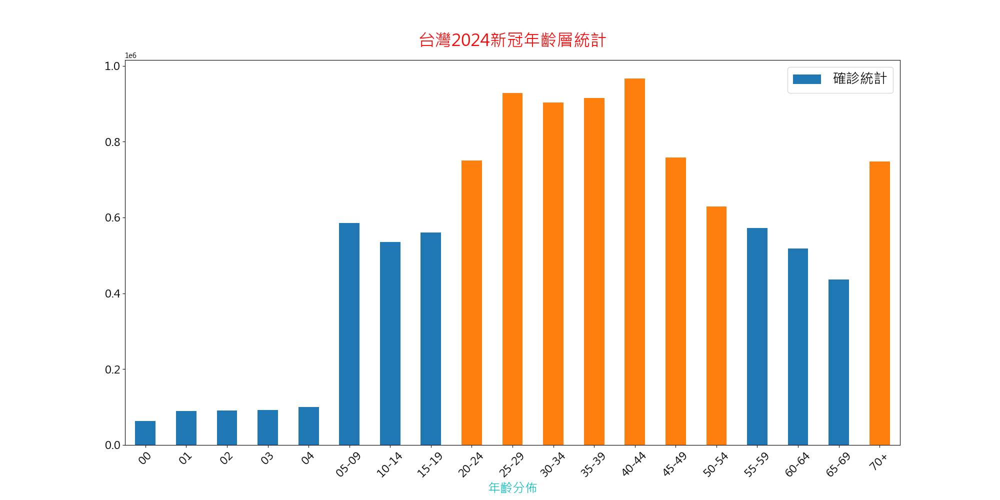

2023新冠肺炎統計
說明
資料集(covid-19.csv)來自衛生福利部疾病管制署公開資料集，以下為2024年的確診病例數統計，利用Pandas資料處理成可視化的圖表。2023年網頁爬蟲詳細過程請見Google Colab。
2024年 covid-19各年齡層確定病例數統計長條圖

Updated at August-29-2024
Python 程式碼
import matplotlib.pyplot as plt
import pandas as pd
# 設定字型
plt.rcParams['font.family'] = ['Microsoft JhengHei']
# 讀取數據
df = pd.read_csv('covid-19.csv')
# 按年齡層分组並彙整確定病例數
df_ages=df.groupby('年齡層')['確定病例數'].sum()
# 處理索引
new_index=[]
for i in range(df_ages.index.size):
if len(df_ages.index[i]) >3:
new_index.append(df_ages.index[i])
else:
if len(df_ages.index[i]) == 1:
new_index.append(df_ages.index[i].zfill(2))
else:
if '+' in df_ages.index[i]:
new_index.append(df_ages.index[i])
else:
spi=df_ages.index[i].split('-')
#new_index.append("0"+spi[0]+"-0"+spi[1]) #結果和下面zfill(2)一樣
new_index.append(spi[0].zfill(2)+"-"+spi[1].zfill(2))
df_ages.index=new_index
df_ages.sort_index(inplace=True)
df_ages=df_ages.to_frame(name='確診統計')
# 自訂圖表顏色
colors = ['#ff7f0e', '#1f77b4']
# 分配顏色，人數大於600000為橘色其他為藍色
df_ages['color'] = df_ages['確診統計'].apply(lambda x: colors[0] if x > 600000 else colors[1])
# 繪圖
ax=df_ages['確診統計'].plot(kind='bar',figsize=(20,10),rot=45,color=df_ages['color'],fontsize=16)
ax.legend(fontsize=20)
ax.set_xlabel('年齡分佈',fontdict={'fontsize':18,'color':'c'})
ax.set_title("台灣2024新冠年齡層統計",pad=20, fontdict={'fontsize':24,'color':'r'})
plt.show()